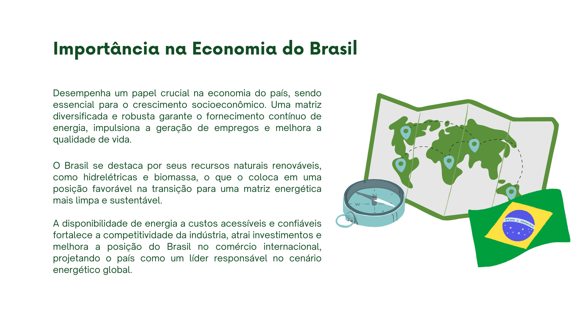
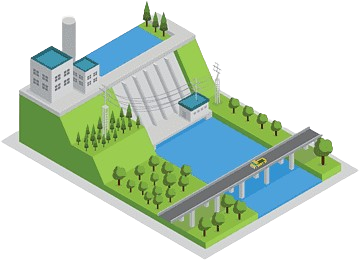
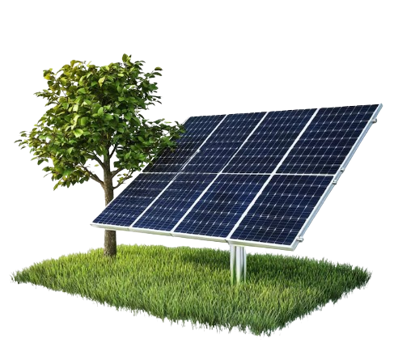
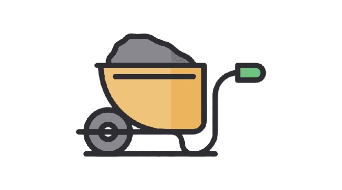
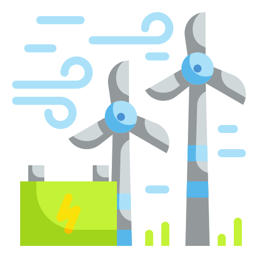
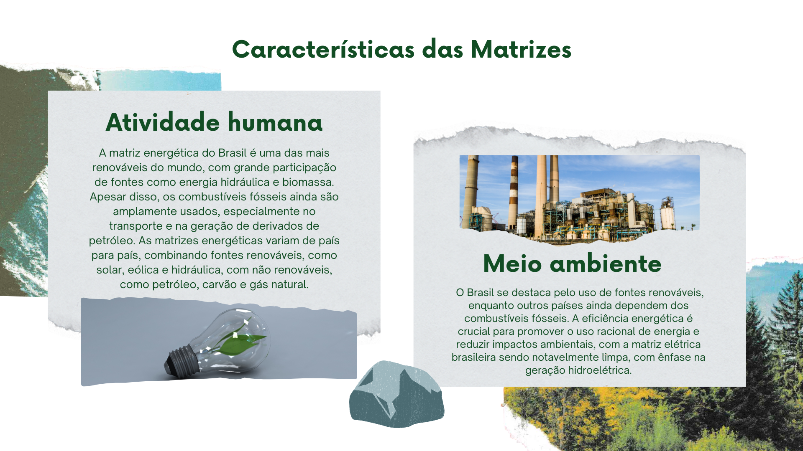
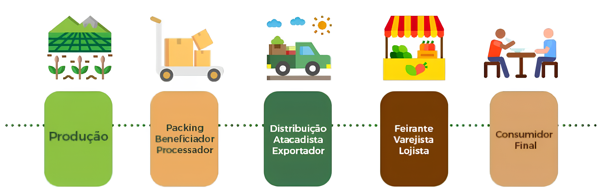

MATRIZES ENERGÉTICAS
A matriz energética é o conjunto de todas as fontes de energia disponíveis e utilizadas por um país para movimentar sua economia e atender às necessidades da população. Em outras palavras, ela representa de onde vem a energia que usamos no nosso dia a dia – seja para acender uma lâmpada, abastecer um carro, produzir bens em uma fábrica ou manter hospitais e escolas funcionando. Cada país possui uma matriz energética própria, baseada em fatores como a disponibilidade de recursos naturais, o nível de desenvolvimento tecnológico, as políticas governamentais e os investimentos realizados no setor de energia. Essa matriz é formada por diversas fontes de energia, que se dividem em dois grupos principais: renováveis e não renováveis.

Matrizes Energéticas Existentes
HIDRELÉTRICA
Principal fonte no Brasil. Renovável, mas depende da água dos rios. A energia hidrelétrica é aquela que é gerada ao transformar a força da água em energia elétrica. Para aproveitar tal força, são construídas grandes infraestruturas hidráulicas capazes de extrair o máximo potencial desse recurso renovável, livre de emissões e que se origina na própria área.

SOLAR
Energia solar é a energia proveniente do sol, que pode ser utilizada para diversas finalidades, como gerar eletricidade, aquecer água e até mesmo construir casas com maior eficiência energética. É uma fonte de energia renovável e sustentável, com baixo impacto ambiental. Fonte limpa e promissora. Custo de instalação ainda é elevado.

CARVÃO MINERAL
O carvão mineral é uma fonte de energia não renovável, utilizada principalmente para geração de eletricidade, especialmente em termelétricas. Alta emissão de poluentes. No Brasil, representa cerca de 5% da matriz energética e 3% da matriz elétrica, sendo um recurso finito e que pode se esgotar com o passar dos anos.

EÓLICA
A energia eólica é uma forma de energia renovável que aproveita a força do vento para gerar eletricidade. Esta energia é convertida em energia elétrica através de aerogeradores, que são estruturas com hélices que giram com o vento, impulsionando um sistema de geração de energia. Limpa e crescente no Nordeste.

Gráfico Estatístico
O gráfico apresentado mostra a matriz energética do Brasil, ou seja, a participação de cada fonte de energia no total de energia consumida no país. De acordo com os dados, a principal fonte de energia utilizada é o petróleo e seus derivados, que correspondem a 35,7% da matriz energética brasileira. Essa é uma fonte não-renovável e muito utilizada nos transportes e na indústria. Em segundo lugar, destacam-se os derivados da cana-de-açúcar, com 15,4%, uma fonte renovável bastante presente no Brasil, principalmente na produção de etanol. A energia hidráulica aparece logo depois, com 12,5%, sendo uma das principais fontes de eletricidade do país, por meio das hidrelétricas. Outras fontes são o gás natural (10,5%) e a lenha e o carvão vegetal (9,0%). Além disso, há participação de outras fontes renováveis (7,0%), carvão mineral (4,6%), energia eólica e solar (3,5%), energia nuclear (1,3%) e outras fontes não-renováveis (0,6%).
Fontes de Energia no Brasil (%)

Exportações e Importações
O Brasil possui uma matriz energética diversificada, com forte presença de fontes renováveis. No entanto, o país ainda realiza importações significativas de combustíveis fósseis, como o gás natural e derivados de petróleo, especialmente para suprir demandas específicas do setor de transportes e da indústria. Ao mesmo tempo, o Brasil é exportador de petróleo bruto, etanol e energia elétrica em determinadas regiões de fronteira, como para a Argentina e o Paraguai (no caso da Usina de Itaipu). Essa relação entre exportações e importações reflete tanto os avanços quanto os desafios na autossuficiência energética brasileira.
Cadeia Produtiva da Energia no Brasil
A cadeia produtiva da energia no Brasil é composta por várias etapas: exploração, produção, transformação, distribuição e consumo final. No setor de petróleo, por exemplo, essa cadeia inclui desde a extração em campos terrestres ou marítimos (como o pré-sal), o refino nas refinarias nacionais, até a distribuição para os postos de combustíveis. No caso das fontes renováveis, como a biomassa e a energia hidráulica, há também uma complexa rede produtiva, que envolve desde a produção agrícola (como a cana-de-açúcar para o etanol), a geração de energia nas usinas e a transmissão até os centros consumidores.
.png)
Narrativa: O Que são Matrizes Energéticas?
Elaborado por: Maria Eduarda de Andrade.
Realização: Maria Eduarda de Andrade e Ana Lívia Domingas.
CADEIA PRODUTIVA

A cadeia produtiva é o conjunto de processos e etapas interligadas que envolvem a produção de um bem ou serviço, desde a extração ou produção da matéria-prima até a entrega do produto final ao consumidor. Cada etapa dessa cadeia contribui para agregar valor ao produto, envolvendo diferentes setores da economia, como a agricultura, a indústria, os serviços de transporte, a comercialização e o consumo final.
As Etapas da Cadeia Produtiva Incluem:
- Obtenção de matéria-prima: é a fase inicial, onde se extraem os recursos naturais por meio da agropecuária ou do extrativismo.
- Transformação da matéria-prima: beneficiamento ou industrialização, onde é transformada em produtos ou componentes.
- Distribuição da matéria-prima: envolve o transporte e a logística necessária para levar os produtos até os pontos de venda.
- Produto final: é o resultado de todas as etapas anteriores, pronto para ser consumido pelo público.
Assista ao vídeo no YouTube
Referências Utilizadas
- Empresa de Pesquisa Energética (EPE)
- Agência Nacional de Energia Elétrica (ANEEL)
- Ministério de Minas e Energia (MME)
- Agência Nacional do Petróleo, Gás Natural e Biocombustíveis (ANP)
- Instituto Brasileiro de Geografia e Estatística (IBGE)
- FGV Energia
- Agência Internacional de Energia (IEA)
- Plataforma Brasil 2050 - Sustentabilidade e Energia